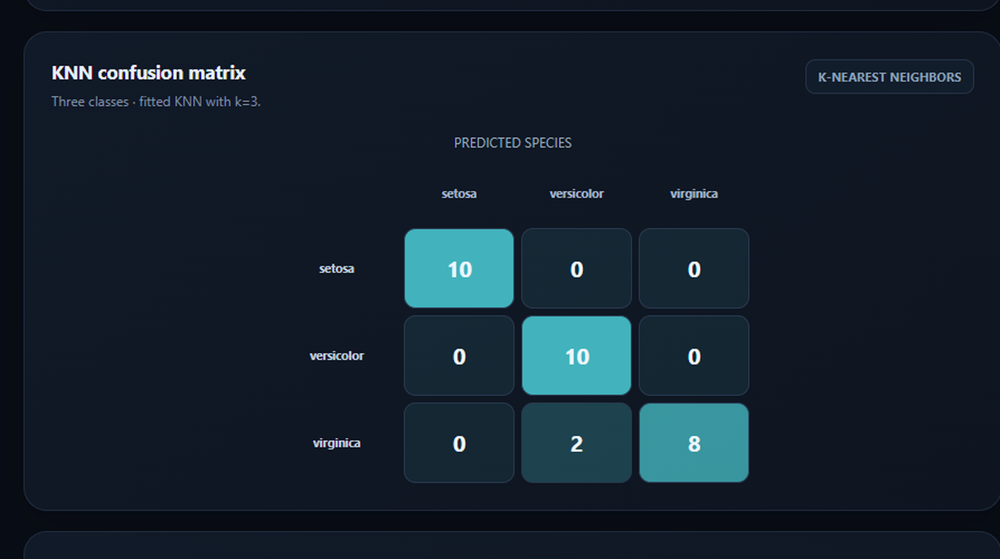
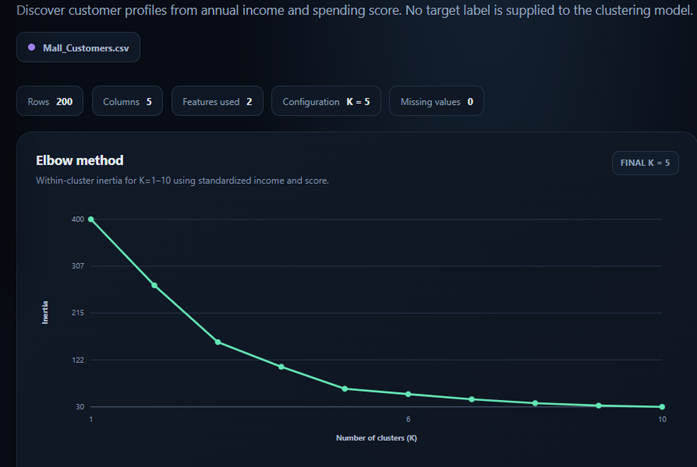
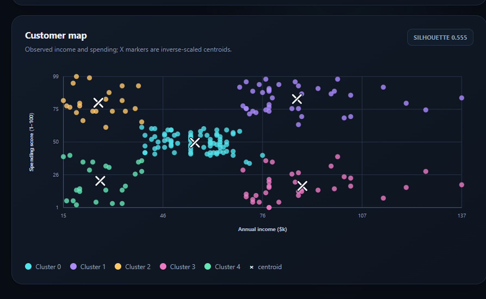

K.L.E. SOCIETY'S
P.C. JABIN SCIENCE COLLEGE, AUTONOMOUS
(Affiliated to Karnatak University, Dharwad)
HUBBALLI – 580031
Bachelor of Computer Applications
2026–27
A Dissertation Report
On
Machine Learning IV — Applied Machine Learning Projects
Submitted in partial fulfilment of the requirement for the award of the degree
BACHELOR OF COMPUTER APPLICATIONS
Submitted By
Atharv M Bennur
Register No. 224010
Under the Guidance of
Prof. Shashank Umesh Jagatap
Affiliated to
Karnatak University, Dharwad
K.L.E. SOCIETY'S
P.C. JABIN SCIENCE COLLEGE, AUTONOMOUS
(Affiliated to Karnatak University, Dharwad)
HUBBALLI – 580031
Bachelor of Computer Applications · 2026–27
CERTIFICATE
This is to certify that the project entitled “Machine Learning IV — Applied Machine Learning Projects” is a bonafide work carried out by Mr. Atharv M Bennur (Register No. 224010), under the guidance of the Project Guide, Prof. Shashank Umesh Jagatap, in partial fulfilment of the requirements for the award of the degree of Bachelor of Computer Applications of Karnatak University, Dharwad, during the academic year 2026–27.
The report is submitted for academic evaluation in accordance with the project work prescribed for the BCA degree.
Project Guide
HOD
External Examination:
Name of the ExaminersSignature with date
1.
2.
DECLARATION
I hereby declare that the project report entitled “Machine Learning IV — Applied Machine Learning Projects”, submitted in fulfilment of the requirements of the BCA project work for the award of the degree of Bachelor of Computer Applications of Karnatak University, Dharwad, during the academic year 2026–27, is the result of my project work.
I further declare that this report has not been submitted, in whole or in part, to any other organisation or institution for the award of any degree or diploma. It records the results of my own work using the supplied datasets and the accompanying machine learning notebook.
Date: ____________________
Place: Hubballi
Sign
Atharv M Bennur
Register No. 224010
ACKNOWLEDGEMENT
It is my pleasure to acknowledge the people who directly and indirectly supported the completion of this project and report.
I express my sincere gratitude to my project guide, Prof. Shashank Umesh Jagatap, for valuable guidance, constructive suggestions, and continued support throughout the project work. I also thank the Head of the Department of BCA for encouragement and facilities provided during this project.
I also thank the teaching and non-teaching staff of K.L.E. Society's P.C. Jabin Science College, Autonomous, Hubballi, for their assistance and for the academic environment provided during this work.
Finally, I thank my family and friends for their encouragement and support during this project.
Atharv M Bennur
Register No. 224010
ABSTRACT
This project studies four applied machine learning tasks using the supplied Iris, Car Dekho, Mall Customers, and Student Performance Factors datasets. The work includes flower-species classification, used-car selling-price regression, mall-customer segmentation, and examination-score regression. A Jupyter notebook contains the analysis and model evaluation workflow, and a standalone HTML dashboard presents the results.
Logistic Regression and tuned K-Nearest Neighbors each achieved 93.3% held-out accuracy on the Iris task. For car-price prediction, 763 exact duplicate rows were removed before splitting. A five-fold training-only comparison selected Lasso Regression on log selling price, with held-out R² of 0.7720, meeting the assignment target of 0.75. The earlier approximately 0.519 result is preserved as a historical baseline, not a directly comparable re-run.
K-Means with five clusters grouped 200 mall customers by annual income and spending score, with a silhouette score of 0.555. For student performance, Linear Regression obtained held-out R² of 0.770, MAE 0.452, MSE 3.256, and RMSE 1.804; the Random Forest comparison achieved R² of 0.682.
The project uses task-appropriate preprocessing and metrics. Classification accuracy, regression R², and clustering silhouette score describe different properties and are not compared as a common measurement.
For supervised projects, the held-out test data is kept separate from model selection. The car workflow removes exact duplicate records before splitting, while the student workflow handles missing predictor values through training-fitted preprocessing. The clustering analysis uses standardized income and spending features so neither numeric scale dominates the distance calculation.
The accompanying dashboard presents the measurements, comparisons, and selected visualizations in a single offline HTML file. The report records both model results and limitations, including the distinction between the earlier car baseline and the evaluated model developed in the current workflow.
Together, these deliverables emphasize transparent analysis: the notebook documents how the values were produced, and the dashboard and report explain how those values should be read.
Across the four tasks, the work also records dataset checks, preprocessing choices, model-selection boundaries, and task-specific limitations. These details support reproducibility and clarify where the models may not generalize.
Keywords: Machine Learning, Classification, Regression, K-Means Clustering, Data Preprocessing, Model Evaluation, Python.
CONTENTS
I. INTRODUCTION
Machine learning uses data to identify patterns and support prediction or grouping. The methods used depend on the task: classification predicts a category, regression estimates a numeric value, and clustering discovers groups when no target labels are supplied. This project applies these methods to four datasets as part of the Machine Learning IV course.
The project brings together data inspection, cleaning, exploratory analysis, preprocessing, model fitting, evaluation, and interpretation. The four studies are independent because they use different target variables, feature types, and evaluation measures.
1.1 Limitations of the Existing Approach
Applying a single modelling method to unrelated datasets can obscure important differences in task definition and data quality. A classifier cannot directly estimate a continuous selling price; a regression score does not describe cluster separation; and a clustering result does not predict a known target label.
Evaluation can also be misleading if the test data influences preprocessing or model selection. Duplicate records shared between training and test partitions may inflate apparent generalization. Summary metrics without plots can hide class-specific errors, extreme residuals, or overlapping clusters.
Project Motivation
Working with four different datasets provides a practical way to study how the definition of a target changes the entire analysis. Iris species and examination scores have known outcomes and therefore support supervised learning. Used-car prices are also known numeric outcomes, but their feature types and scale require a different regression pipeline. Mall customer records have no supplied segment labels, so the task is exploratory rather than predictive.
The project therefore emphasizes choosing a method after identifying the problem, not before. Dataset dimensions, field types, missing values, duplicates, and feature scales are inspected before model fitting. These checks help explain why a particular preprocessing step is used and what a reported score can reasonably establish.
A concise dashboard complements the notebook by presenting outputs in context. It enables a reviewer to move between projects while retaining the distinction between the four tasks and their separate evidence.
The report follows the same principle by describing the method, evaluation design, result, and limitation for each project rather than presenting a score without context.
1.2 Proposed System
The proposed work provides four dataset-specific analysis pipelines in one Jupyter notebook and one offline dashboard. Each pipeline validates its own input, selects features appropriate to the task, fits preprocessing on training data where applicable, and reports task-specific evaluation results.
1.3 Problem Definition
The project addresses four problems: classify an Iris flower from four measurements; estimate a used car's selling price from its listing attributes; group mall customers using annual income and spending score; and estimate a student's examination score from recorded study and contextual factors.
1.4 Primary Stakeholders
| Stakeholder | Interest in the project |
|---|---|
| Student developer | Apply machine learning methods and document a reproducible project workflow. |
| Academic evaluators | Review the methodology, implementation, outputs, and evaluation evidence. |
| Dashboard viewers | Explore the four project results and their interpretation. |
1.5 Scope Boundaries
The work is an instructional analysis of the supplied datasets. It does not provide a production prediction service, claim causal relationships, or represent its outputs as professional decisions about vehicles, customers, or students.
Project objectives:
- Inspect each source file and summarize its dimensions, fields, and data-quality concerns.
- Build task-appropriate preprocessing and model workflows with a clear separation between training and final evaluation data.
- Report classification, regression, and clustering measures with their correct interpretation.
- Present the verified findings in a standalone dashboard and an academic project report.
The expected outcome is a documented comparison of methods and observed results rather than a universal model. This boundary is important: the project datasets are limited examples, and any operational use would require further validation with relevant, current data.
Successful completion is therefore measured by a traceable workflow and accurate communication as well as by predictive performance.
II. LITERATURE SURVEY
The methods applied in this project are established approaches in supervised classification, supervised regression, and unsupervised clustering. Their use is motivated by the project targets and input structure rather than by a single universal performance measure.
| Method | Role in the project | Consideration |
|---|---|---|
| Logistic Regression | Classifies Iris species from scaled measurements. | Models class probabilities using a linear decision structure. |
| K-Nearest Neighbors | Provides an instance-based Iris classifier. | Distance depends on feature scaling and neighbor count. |
| Linear, Ridge and Lasso Regression | Estimate continuous car prices and examination scores. | Regularization and target transformations affect fit and interpretation. |
| Random Forest Regression | Comparison model for student scores. | Can model nonlinear patterns; importance is not causation. |
| K-Means | Groups mall customers with K=5. | Requires scaled features and a preselected cluster count. |
2.1 Evaluation Measures
Accuracy, precision, recall, and F1-score evaluate classification outputs. MAE, MSE, RMSE, and R² evaluate regression errors and fit. The silhouette score describes cluster cohesion and separation. These measures answer different questions and should not be ranked against one another.
2.2 Feasibility Study
The four CSV datasets and a Python notebook are available locally. Standard data-science libraries support all required workflows. The dashboard embeds its chart data in a single HTML file and can be opened in a browser without a backend service.
From a technical perspective, the datasets are small enough for a conventional notebook environment and the selected estimators are available in the standard scikit-learn library. The main implementation work is data validation, correct preprocessing, reproducible model selection, and clear communication of results.
Operationally, the dashboard is a read-only presentation layer. It does not upload data, call an external service, or generate new predictions from user-entered values. This keeps the presentation self-contained and avoids implying that an unverified interactive model is available.
In terms of project scope, the four studies can be completed using the provided files and local software. Their outputs can be checked against the notebook and reviewed independently of a hosted application.
III. TECHNICAL REQUIREMENTS
The project requires a general-purpose computer capable of running Python and Jupyter, or a compatible hosted notebook environment. The datasets and model sizes are suitable for instructional analysis.
Table 3.1 Hardware Requirements
| Component | Requirement |
|---|---|
| Processor | Modern multi-core processor or equivalent. |
| RAM | 4 GB minimum; 8 GB or more recommended for notebook execution. |
| Disk space | Space for Python environment, notebook, datasets, dashboard, and figures. |
| Display | Display capable of showing notebook cells and browser visualizations. |
| Input devices | Keyboard and mouse or equivalent pointing device. |
Table 3.2 Software Requirements
| Software | Purpose |
|---|---|
| Python and Jupyter | Execute and document the machine learning workflows. |
| pandas and NumPy | Read, inspect, and transform tabular data. |
| scikit-learn | Preprocessing, models, validation, and evaluation metrics. |
| Matplotlib and Seaborn | Notebook visualizations and exploratory analysis. |
| Modern web browser | Open the standalone dashboard and HTML report. |
3.1 Data and Operating Requirements
The four required files are Iris.csv, CAR DETAILS FROM CAR DEKHO.csv, Mall_Customers.csv, and StudentPerformanceFactors.csv. The notebook requests each dataset independently. The dashboard and report use relative local images and do not require a web server.
Notebook execution requires a Python environment with the listed data-science packages installed. Dataset upload or path selection is performed separately for each analysis so the workflow does not assume that unrelated files share a schema. A modern browser is sufficient to view the dashboard; printing the report requires a browser with standard A4 print support.
For repeatable evaluation, the notebook records the split and validation procedure alongside the reported measures. The dashboard contains the resulting values rather than recalculating models in JavaScript. Keeping computation and presentation separate makes it easier to trace each displayed result back to its analysis.
Keep this report beside its local images folder when moving or printing the document.
IV. PROJECT DESCRIPTION
The project consists of four practical studies selected to demonstrate distinct machine learning task types. Each study uses the supplied source file and has an independent objective.
Table 4.1 Project Dataset Summary
| Project and dataset | Dimensions | Target or inputs | Method |
|---|---|---|---|
| Iris Classification Iris.csv | 150 × 6 | Four flower measurements; Species target | Logistic Regression; KNN |
| Car Price Prediction CAR DETAILS FROM CAR DEKHO.csv | 4,340 × 8 | Vehicle attributes; selling_price target | CV-selected Lasso Regression on log target |
| Mall Customer Segmentation Mall_Customers.csv | 200 × 5 | Annual Income and Spending Score | K-Means, K=5 |
| Student Performance Prediction StudentPerformanceFactors.csv | 6,607 × 20 | 19 predictors; Exam_Score target | Linear Regression; Random Forest |
4.1 Dataset Characteristics
The supplied Iris dataset contains three equally represented species. The car file has no missing values and contains 763 exact duplicate rows, removed before model splitting. The mall file contains 200 records without missing values. The student file has 235 missing predictor cells; the score target is present for the 6,607 rows used in the project.
These differences affect preparation. Iris measurements are numeric and the species field is categorical. Car records include mixed numeric and categorical vehicle attributes, with the selling price represented on a wide currency scale. Mall segmentation intentionally uses only annual income and spending score. Student performance combines numeric and categorical predictors and requires a strategy for incomplete input fields.
Record counts in the summary describe the supplied files before task-specific transformations unless explicitly identified as the usable model rows. The car analysis reports both the 4,340 raw records and the 3,577 remaining unique rows after exact duplicate removal. This distinction prevents a cleaning step from being hidden in the final description.
Table 4.1 is therefore a source-data overview, while the model-specific chapters give the evaluation sample and metrics relevant to each experiment.
In combination, the four sources provide a varied but manageable basis for the assignment. Their different scales, fields, and target types make data inspection an essential first step before selecting a model.
4.2 Principal Workflow
Each analysis loads its own dataset, confirms required fields, examines missing and duplicate records, and performs exploratory analysis. The data is then prepared for the selected modelling task. Supervised projects reserve a test partition for final evaluation; clustering uses standardized selected features and a fixed K=5 final model.
Dataset → Inspection → Cleaning → EDA → Preprocessing → Model Training → Evaluation → Interpretation
4.3 Iris Classification
The objective is to predict Iris species from sepal and petal length and width. A stratified 80:20 split is used with random state 42. Numeric measurements are scaled inside the model pipeline. Logistic Regression is compared with K-Nearest Neighbors, whose neighbor count is tuned using training-only cross-validation.
4.4 Car Price Prediction
The objective is to estimate used-car selling price. Exact duplicates are removed before the 80:20 split, leaving 3,577 usable rows. The model pipeline uses numeric vehicle age and log kilometres driven with categorical vehicle information. Five-fold cross-validation selects among model candidates on training data only; the selected model's mean training-fold R² is 0.782185.
4.5 Mall Customer Segmentation
The objective is to group customers by annual income and spending score. Both features are standardized before K-Means. Customer identifier, age, and gender are not used in the distance calculation. The required final configuration is K=5.
4.6 Student Performance Prediction
The objective is to estimate Exam_Score from 19 recorded student-related predictors. Numeric and categorical missing values are handled by training-fitted preprocessing. Linear Regression and Random Forest Regression are compared.
Across the four workflows, an 80:20 hold-out design supports a final test-set evaluation for supervised learning. The model-selection step is kept within training data, and each project uses measures that match its target. These controls are intended to make the reported comparisons meaningful for the specified data split.
The project outputs include fitted predictions, model summaries, and visual diagnostics. In the clustering study, where no target is available, the results instead describe customer groups, their centers, and separation. This is a different kind of evidence from predicting a known class or score.
V. SYSTEM DESIGN
5.1 System Architecture
The analysis is organized into a data layer, a notebook modelling layer, and a presentation layer. The supplied CSV files remain source inputs. Notebook cells process and evaluate the models. The dashboard embeds the resulting values and chart observations for offline viewing.
| Component | Responsibility |
|---|---|
| Dataset files | Provide the four independent tabular data sources. |
| Jupyter notebook | Perform loading, cleaning, exploratory analysis, preprocessing, model training, and evaluation. |
| Standalone dashboard | Display project views, model metrics, charts, and verified example outputs. |
| HTML report | Document the project using the academic report structure. |
5.2 Data Flow and Validation
For each project, the selected CSV is validated against task-specific required columns before it is used. Identifiers are excluded from model features. Preprocessing operations are fitted within training pipelines, and test rows are reserved for final evaluation.

The architecture keeps source data, computation, and communication distinct. Dataset files are inputs rather than dashboard dependencies; the notebook is the executable record of the analysis; and the HTML report and dashboard are presentation artifacts. Updating an output therefore begins by verifying the corresponding notebook result rather than editing a chart value in isolation.
Validation is task-specific. Supervised data is separated into training and test partitions, with transformations learned on training data. The unsupervised mall analysis has no label-based test metric, so it reports cluster quality and descriptive profiles instead of accuracy.
5.3 Validation and Model Selection
Model selection uses cross-validation on training partitions. For the car model, a held-out test partition of 716 rows remains separate from feature and hyperparameter selection. The chosen Lasso pipeline is evaluated after selection, and results are reported on the original currency scale.
For student score prediction, Linear Regression is selected using training-only folds and then compared with Random Forest on the same held-out split. For Iris, a stratified test split supports final classification reporting. The mall study evaluates K=5 using silhouette score and compares inertia over a range of cluster counts.
5.4 K-Means Configuration
Annual income and spending score are standardized before K-Means so their differing numeric scales do not dominate distance. The model uses five clusters and deterministic initialization settings. Cluster centers are inverse-transformed for descriptive profiles in the original dataset units.

Model quality is assessed with the measure suited to the corresponding task. The held-out Iris results include class-level errors, regression results are reported with both error magnitudes and R², and the segmentation result uses silhouette to summarize cohesion and separation. These measures are not combined into a single project ranking.
For the car analysis, exact duplicates are removed before the hold-out split. For student analysis, imputation and categorical encoding are part of the fitted preprocessing pipeline. These choices reduce leakage by ensuring that learned transformations do not use information from the final test rows.
Reproducibility also depends on documenting the split, model-selection criteria, and final configuration. The dashboard's explanatory labels preserve this context so a metric is not separated from the procedure that produced it.
Figure 5.2 illustrates the explicit five-cluster configuration used for the required segmentation task.
For the supervised tasks, final test metrics are calculated only after the pipeline has been selected. This separation gives a more defensible estimate of performance on unseen rows than reusing the selection data for the final score.
VI. USER INTERFACE DESIGN AND OUTPUTS
6.1 Dashboard Overview
The overview presents the project identity, student details, dataset registry, and links to the four study views. Metric families remain separated so that classification accuracy, regression R², and clustering silhouette are interpreted in their respective contexts.

The dashboard is a standalone HTML page with embedded values and charts. It can be opened locally without a backend or connection to the CSV files.
The overview places the student and assignment identity beside the four project entry points, dataset counts, and selected performance highlights. Navigation changes the visible project view without opening a separate page, while the project-specific sections retain their own metrics and explanations.
Each view is designed to answer a different review question: what was measured, which method was used, how the result was evaluated, and what the result means. This context is especially important when reading the comparison because accuracy, R², and silhouette score measure different properties.
The screenshot records the overview as it appears in the dashboard. Its figures illustrate the interface; the notebook and report tables remain the detailed record of the evaluation.
6.2 Iris Classification Output
The Iris view displays dataset dimensions, balanced species counts, measurement profiles, model metrics, confusion matrices, and actual versus predicted examples. Both models achieved 93.3% accuracy on the held-out test set. The confusion matrices show the specific class errors.


| Model | Accuracy | Precision | Recall | F1-score |
|---|---|---|---|---|
| Logistic Regression | 0.933 | 0.933 | 0.933 | 0.933 |
| K-Nearest Neighbors | 0.933 | 0.944 | 0.933 | 0.933 |
Both models correctly classified 28 of the 30 held-out flowers. The displayed Logistic Regression matrix shows one versicolor predicted as virginica and one virginica predicted as versicolor; the setosa row is fully correct. The KNN matrix provides the corresponding class-by-class view for its predictions.
Precision reflects the correctness of predictions for a species, while recall reflects the proportion of actual examples of that species that were found. The matching overall accuracy therefore does not imply identical error patterns. The confusion matrices and class scores provide the detail needed to interpret the comparison.
All four measurements are in centimetres. Sepal length and width describe the outer flower parts, while petal length and width describe the inner structures; the latter measurements can provide useful separation among the three species.
Each model correctly classified all ten setosa flowers. Logistic Regression correctly classified nine versicolor and nine virginica cases; KNN correctly classified all ten versicolor cases and eight virginica cases. Both therefore made two errors in this test sample, but the error distribution differs by species.
Scaling is applied within each fitted pipeline so the measurements can contribute on comparable numeric ranges. The results describe this stratified split and should not be read as a guarantee for every future flower sample.
6.3 Car Price Prediction Output
The car view displays the duplicate-cleaning summary, selected-model status, model comparison, historical baseline, price distribution, year and distance relationships, actual-versus-predicted values, and residual analysis. The selected model achieved held-out R² of 0.7720 against a target of 0.75.

| Metric | Held-out result |
|---|---|
| MAE | ₹95,394.85 |
| MSE | ₹73,430,608,649.04 |
| RMSE | ₹270,980.83 |
| R² | 0.772049 |
The mean absolute error is expressed in rupees and summarizes the average absolute gap between the prediction and observed selling price. RMSE is also on the currency scale but assigns greater influence to large errors; MSE is measured in squared rupees. R² describes the share of test-target variation explained by the fitted model relative to a mean-only reference.
The actual-versus-predicted plot should be read against its equality line: closer points indicate smaller errors, while systematic departures suggest bias. The result meets the stated 0.75 assignment target, but it does not eliminate prediction error or establish performance on listings from other sources.
Earlier R² 0.519 is from a different run, not a direct comparison.
6.4 Mall Customer Segmentation Output
The mall view shows the elbow method, five-cluster customer map, centroids, segment profiles, and customer counts. Segment names summarize fitted income and spending centers; they are descriptive and not ground-truth labels. The K=5 silhouette score is 0.5547.


| Profile | Customers | Mean income (k$) | Mean spending |
|---|---|---|---|
| Medium income, moderate spending | 81 | 53.3 | 49.5 |
| High income, high spending | 39 | 86.5 | 82.1 |
| Low income, high spending | 22 | 25.7 | 79.4 |
| High income, low spending | 35 | 88.2 | 17.1 |
| Low income, low spending | 23 | 26.3 | 20.9 |
The elbow curve shows a steep reduction in within-cluster inertia at smaller K values, followed by diminishing gains. The required five-cluster solution is retained for the assignment; the elbow is a diagnostic rather than proof that one cluster count is uniquely correct.
The silhouette score of 0.5547 summarizes how closely customers align with their own cluster compared with neighboring clusters in the standardized feature space. The profile names are concise descriptions of the cluster centers, not labels supplied with the dataset. A business could use such groups to formulate hypotheses about customer engagement, then validate those hypotheses before taking action.
In the customer map, annual income is shown on the horizontal axis and spending score on the vertical axis. Color indicates cluster assignment and the cross markers show inverse-scaled centroids. Segment names are assigned after fitting to summarize the observed centers; the plot does not show pre-existing customer categories.
6.5 Student Performance Prediction Output
The student view presents the target distribution, regression comparison, actual-versus-predicted scores, residuals, Random Forest feature importance, and verified example estimates from the notebook. The examples are reported results, not a hardcoded interactive prediction engine.

| Model | MAE | MSE | RMSE | R² |
|---|---|---|---|---|
| Linear Regression | 0.452 | 3.256 | 1.804 | 0.770 |
| Random Forest Regressor | 1.057 | 4.488 | 2.119 | 0.682 |
On this held-out split, Linear Regression has lower absolute and squared errors and a higher R² than the Random Forest comparison. MAE and RMSE are measured in score points, while MSE is in squared points. Residual plots help reveal whether errors are centered around zero and whether their spread changes across the range of fitted scores.
The feature-importance display is a model-specific summary of predictive contribution, not evidence that a factor causes examination outcomes. The example predictions shown in the dashboard are notebook outputs. They are included for interpretation and are not generated by a user-input form.
The dataset includes 19 predictors covering study conditions and student context. Their presence supports a multivariable estimate, but predictive association alone does not show which interventions would improve an individual student's result.
Points close to the dashed equality line indicate predictions close to observed scores. The more distant points illustrate that individual errors remain even when overall test metrics are favorable.
VII. IMPLEMENTATION (DEPLOYMENT)
The notebook implementation separates data loading, exploratory analysis, preprocessing, model fitting, evaluation, and interpretation. Learned preprocessing is kept inside pipelines to fit transformations on training data.
7.1 Iris Model Training
The Iris workflow compares scaled Logistic Regression with tuned K-Nearest Neighbors. The grid search selects the neighbor count using stratified training folds; the test data is reserved for final metrics.
7.2 Car Model Selection
The car workflow compares raw and log-target regression candidates and regularized models using shuffled five-fold training validation. Lasso Regression on the log target was selected by mean training-fold R².

7.3 K-Means Implementation
The segmentation implementation standardizes annual income and spending score, fits K-Means with five clusters, and computes silhouette on the standardized observations.
7.4 Student Model Selection
Linear Regression and Random Forest are compared using five-fold training-only cross-validation. Held-out metrics are calculated after selection and are not used to select the model.

The dashboard is a standalone HTML file with inline CSS and JavaScript. It embeds result data and renders the overview and four project pages locally.
The two regression outputs use the same held-out split, allowing a direct comparison of their errors on those records. The lower test error of Linear Regression is an observed result for this evaluation; it does not establish that a linear model will outperform a forest on other samples.
Because the dashboard does not contain a serialized estimator or the complete fitted preprocessing pipeline, it intentionally avoids a live prediction form. The values shown as examples are traceable notebook results rather than fabricated responses to arbitrary inputs.
The implementation figures document selected portions of the notebook; the notebook remains the authoritative executable artifact for the full workflow.
VIII. TESTING METHODS WITH TEST CASES
The project checks dataset loading, model workflows, result reporting, and dashboard presentation. Model metrics are generated from held-out data in the notebook and mirrored in the dashboard.
Table 8.1 Project Verification Cases
| ID | Test case | Expected result | Observation |
|---|---|---|---|
| TC-01 | Load Iris dataset | 150 rows and required species/measurement fields | Confirmed in supplied CSV |
| TC-02 | Clean car listing data | Remove exact duplicates before splitting | 763 duplicates removed |
| TC-03 | Train Iris classifiers | Report accuracy and confusion matrices | Both models: 93.3% accuracy |
| TC-04 | Select car regression | Use training-only CV; evaluate held-out test | Lasso log-target; test R² 0.7720 |
| TC-05 | Fit mall clusters | Use K=5 and report silhouette | Silhouette 0.555 |
| TC-06 | Compare student regressors | Report test metrics for both models | Linear Regression R² 0.770 |
| TC-07 | Open dashboard directly | Render views without a backend | Standalone local HTML |
8.1 Reproducible Evaluation
Random state 42 is used where specified. Cross-validation is restricted to training data for model selection. Final held-out metrics are reported after the model choice is made. The dashboard's embedded values are checked against the notebook result record used to prepare the presentation.
Functional checks also cover the report and dashboard as deliverables: the report's page controls navigate among the fixed pages, its local figures load from the images directory, and the dashboard's single-file structure remains suitable for offline viewing. Print output is checked for page count, image placement, and text overlap with the footer.
These checks establish that the documented workflow and presentation behave as intended in the tested environment. They do not replace external replication of the data analysis or validation on a new dataset.
The table records expected behavior and observed outcomes for each analysis path, providing a concise checklist for a reviewer repeating the project.
IX. LIMITATIONS AND RESPONSIBLE USE
The results describe model performance on the supplied data and the specified evaluation splits. They do not guarantee performance on new sources, populations, or time periods.
9.1 Data and Model Limitations
The Iris dataset is small. Car listings do not include every factor that influences selling price, including condition, accident history, and location. The earlier car score near 0.519 came from a different historical run and is not directly comparable to the deduplicated and tuned model.
Mall clusters are descriptive groups based on two standardized variables, not ground-truth customer identities. The student dataset contains missing predictor values and may reflect measurement and sampling limitations. Feature importance and observed associations do not demonstrate causality.
9.2 Responsible Interpretation
Car predictions should not replace inspection, market research, or professional valuation. Customer segments should not be treated as fixed personal characteristics. Student predictions should not be used to label learners or replace academic judgment, support, or contextual review.
MAE, MSE, RMSE, R², accuracy, and silhouette score should be interpreted only within their task definitions. A high score is not a guarantee of correct individual predictions, fairness, or operational suitability.
Model estimates are affected by the representativeness and quality of the input data, feature definitions, preprocessing choices, and evaluation split. The reported test metrics summarize one experimental setup; they are not confidence intervals and do not quantify every source of uncertainty. A further deployment study would need new data, monitoring, and a review of the consequences of errors.
For responsible presentation, cluster names are treated as descriptive, feature importance is not described as causal influence, and individual student scores are not framed as fixed measures of ability. The dashboard provides explanations alongside values so viewers can consider both performance and limitations.
Data should be used only for the educational scope for which it was provided. Any broader use would require appropriate authorization, privacy safeguards, domain review, and evidence that the model is suitable for the intended population and decision.
For these reasons, the report uses language such as “estimate,” “observed,” and “descriptive” rather than implying certainty. Responsible communication is part of model evaluation because readers need to know both what the analysis supports and what remains unknown.
X. CONCLUSION
This project applies classification, regression, and clustering to four supplied datasets. Logistic Regression and tuned KNN each achieved 93.3% Iris test accuracy. The CV-selected used-car Lasso pipeline achieved held-out R² of 0.7720 and met the assignment target of 0.75; the earlier approximately 0.519 result remains identified as a historical baseline.
K-Means with K=5 produced five customer profiles with silhouette score 0.555. Linear Regression achieved student-score test R² of 0.770 and outperformed the Random Forest comparison on the reported split. Each result is described with task-appropriate metrics and limitations.
The notebook and standalone dashboard present an end-to-end workflow from data inspection to model evaluation. The project emphasizes training-only selection, held-out evaluation, and cautious interpretation of model outputs.
Future Enhancements
Future work may validate models on additional independent data, test alternative split strategies where appropriate, examine prediction uncertainty and subgroup performance, and improve feature coverage. Any new dashboard prediction control should use a verified model artifact and input pipeline rather than fixed example values.
Further study could also compare model stability across repeated splits, examine the effects of feature engineering, and report uncertainty around performance estimates. For customer segmentation, future work could test the stability and practical usefulness of the groups with additional variables and domain feedback. For the student task, any extended analysis should investigate data quality and subgroup behavior before drawing conclusions about individual outcomes.
The final deliverables demonstrate a complete educational workflow: inspect the data, select a method suited to the objective, evaluate it using appropriate evidence, and communicate both findings and limits. This approach supports a more responsible understanding of applied machine learning.
Overall, the work presents four distinct applications through a common, traceable process while retaining the methodological differences that make their results meaningful.
Project Outcomes
An important outcome is the connection between each question and its evaluation design. The Iris study reports class-level behavior rather than accuracy alone; the car study documents duplicate removal, training-only selection, and a held-out result against the stated target; the mall study describes centers and cluster separation without treating segments as labels; and the student study compares two regressors on the same test split. These choices make the findings easier to reproduce and explain. They also show that a model score is only one part of an analysis: data quality, validation, visualization, and responsible interpretation are needed to understand what a result can support.
BIBLIOGRAPHY
The sources below document the principal datasets, libraries, and technical references used in this project.
[1] Scikit-learn developers. “User Guide.” Scikit-learn Documentation. https://scikit-learn.org/stable/user_guide.html
[2] Scikit-learn developers. “Model Evaluation: Quantifying the Quality of Predictions.” https://scikit-learn.org/stable/modules/model_evaluation.html
[3] Scikit-learn developers. “Clustering.” https://scikit-learn.org/stable/modules/clustering.html
[4] The pandas development team. pandas Documentation. https://pandas.pydata.org/docs/
[5] NumPy developers. NumPy Documentation. https://numpy.org/doc/
[6] Matplotlib developers. Matplotlib Documentation. https://matplotlib.org/stable/
[7] Project dataset: Iris.csv, supplied with the Machine Learning IV project.
[8] Project dataset: CAR DETAILS FROM CAR DEKHO.csv, supplied with the Machine Learning IV project.
[9] Project dataset: Mall_Customers.csv, supplied with the Machine Learning IV project.
[10] Project dataset: StudentPerformanceFactors.csv, supplied with the Machine Learning IV project.
[11] Project notebook: 224010_AtharvBennur_ML_Project.ipynb, executable record of the project analyses.
[12] Project dashboard: Dashboard/index.html, standalone presentation of the project outputs.